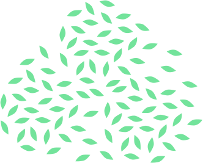

<ng-container *ngIf="ObjStreaming">
    <section class="block-streaming-megaland">
        <article class="counter-wrapper counter-started" *ngIf="ObjStreaming.status == 'started' || ObjStreaming.status == 'ended'">
            <div class="date-place" *ngIf="ObjStreaming.status == 'started'">
                <div class="date-content">
                    <h3 class="text-redo">{{ ObjStreaming.startAt * 1000 | date:'dd' }}</h3>
                    <h5 class="text-redo">{{ ObjStreaming.startAt * 1000 | date:'MMMM' }}</h5>
                    <!-- lugar -->
                    <p class="text-white">{{ObjStreaming.place}}</p>
                </div>
            </div>
            <div [class]="ObjStreaming.status == 'ended' ? 'counter end-event' : 'counter'">
                <h2 class="text-blue">{{ObjStreaming.title}}</h2>
            </div>
        </article>

        <article class="streaming-wrapper">
            <span class="triangle">
        
      </span>
            <span class="stain">
          
      </span>
            <ng-container>
                <div [innerHTML]="ObjStreaming.streaming" runScripts></div>
            </ng-container>

            <span class="hojas">
        
      </span>
        </article>

        <article class="megaland-counter">

            <div class="hash">
                <h2>#MEGALAND</h2>
            </div>
            <div class="counter-wrapper" *ngIf="ObjStreaming.status == 'not_started'">
                <div class="date-place">
                    <div class="date-content">
                        <h3 class="text-redo">{{ ObjStreaming.startAt * 1000 | date:'dd' }}</h3>
                        <h5 class="text-redo">{{ ObjStreaming.startAt * 1000 | date:'MMMM' }}</h5>
                        <!-- lugar -->
                        <p class="text-white">{{ObjStreaming.place}}</p>
                    </div>
                </div>
                <div class="counter">
                    <div class="cuenta">
                        <h5 class="title">Quedan</h5>
                        <div class="dias">
                            <!-- Contador -->
                            <p *ngIf="_day">
                                {{_day}} :
                                <span>Días</span>
                            </p>
                            <p *ngIf="_hour">
                                {{_hour}} :
                                <span>Horas</span>
                            </p>
                            <p *ngIf="_minutes">
                                {{_minutes}} :
                                <span>Minutos</span>
                            </p>
                            <p *ngIf="_seconds">
                                {{_seconds}}
                                <span>Segundos</span>
                            </p>
                        </div>
                    </div>
                </div>
            </div>
        </article>
    </section>
</ng-container>
